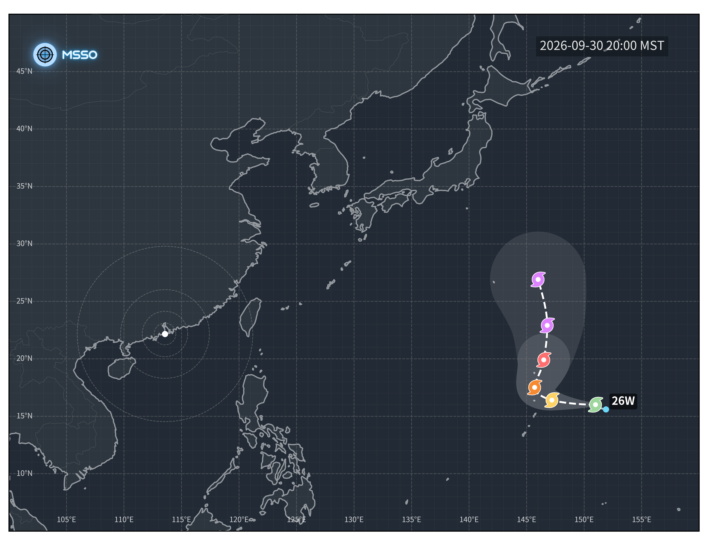

熱帶氣旋專區
v1.1.4
載入中...
農曆計算中...
熱帶氣旋GIS路徑圖
提供互動式地理資訊系統（GIS）熱帶氣旋路徑追蹤與強度分析
查看GIS路徑圖
01
/ 即時活躍系統與風速儀表盤
載入中
-
載入中...
實況時間
-
最大風速
-
中心位置
-
移動方向
-
距離澳門
-
熱帶氣旋報文
請稍候...
02
/ 熱帶氣旋警報預測
-
03
/ 熱帶氣旋警報
載入中...
04
/ 熱帶氣旋資訊
載入中...
05
/ 熱帶氣旋路徑圖
全部熱帶氣旋

活躍氣旋即時數據
即時讀取
正在讀取熱帶氣旋數據...
溫帶氣旋
低壓區
熱帶低氣壓
熱帶風暴
強烈熱帶風暴
颱風
強颱風
超強颱風
天氣實況
熱帶氣旋
天氣預報
空氣質素